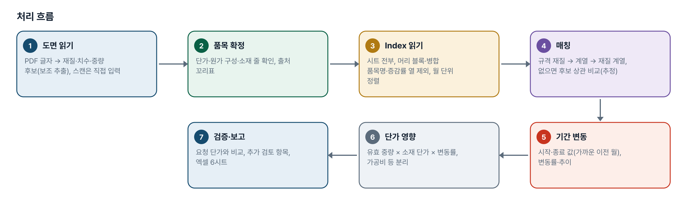
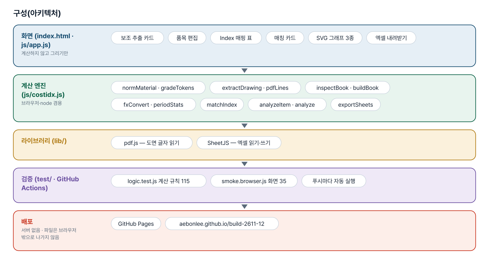
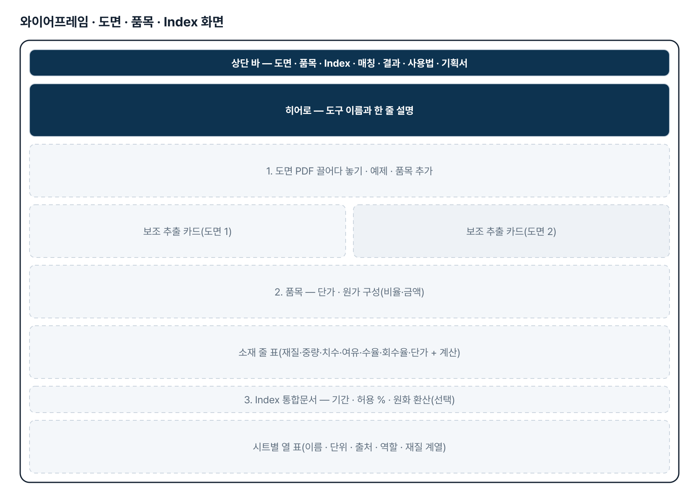
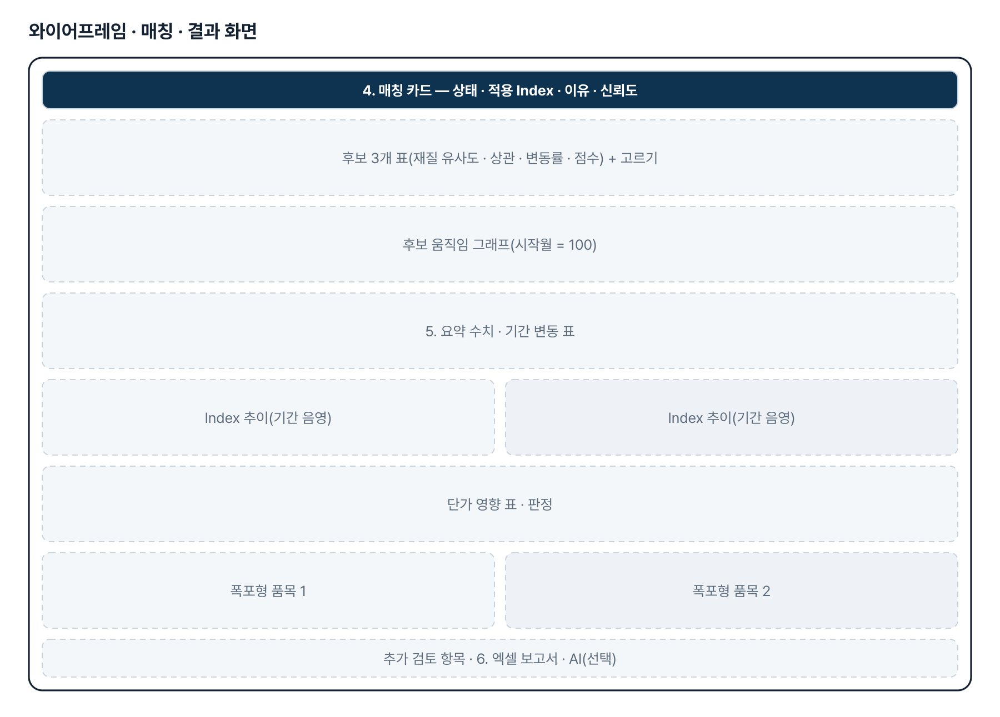
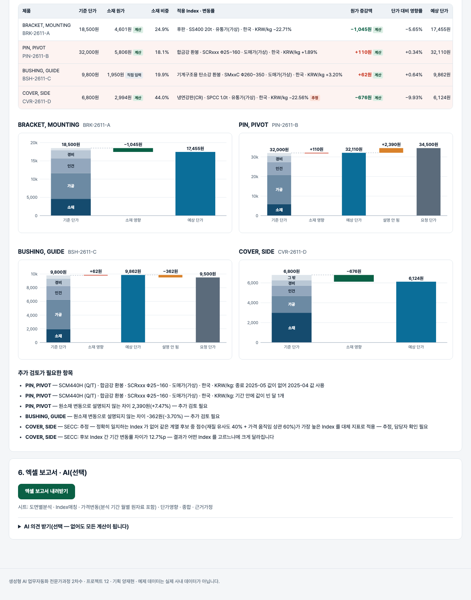

기획서 내려받기
파이프라인 · 아키텍처 · 와이어프레임 · 개발일지가 들어간 워드 문서입니다. 버전마다 따로 남깁니다.
| 버전 | 날짜 | 바뀐 점 | 파일 |
|---|---|---|---|
| v1.1 | 2026-11-03 | 실무 「원자재 가격 동향」 통합문서 형식 읽기 — 시트 여러 장, A열 낱말 머리 블록, 병합 품목명, 연·월 결합(세로 병합 연도), 증감률·분기 열 제외, 최신이 위 정렬, PMI 「2026-5」 날짜 / Index 이름 = 품목 · 규격 · 기준 · 지역 · 단위, 규격 재질 일치 · xx 계열 일치 · 한국/KRW 우선 매칭 / 단위별 결과 표, 비철 원화 열 우선, 환율 시트 원화 환산(선택), 출처·상세출처 근거 표시, 사내 구매가 열은 참고 계열 / 가짜 예제 통합문서(시트 5장)와 4번째 예제 품목(SECC, 추정), 계산 테스트 115 · 화면 테스트 35 | 워드 내려받기 |
| v1.0 | 2026-11-03 | 첫 판 — 도면 보조 추출·품목 원가 구성·Index 엑셀 매핑·정확/추정 매칭·기간 변동·단가 영향·검증·엑셀 보고서 / 기획서 워드 판·파이프라인·아키텍처·와이어프레임 추가 | 워드 내려받기 |
요구사항과 구현
| 기획서 요구 | 구현 |
|---|---|
| 도면 PDF 업로드 · 재질·규격·사용량 추출 | pdf.js 동봉, 표제란 글자에서 후보와 출처 줄(보조 추출), 스캔은 직접 입력 |
| Index 엑셀 업로드, 열·시트가 달라도 매칭 | 시트·날짜 열 고르기, 열마다 역할(Index·참고 계열·제외)과 재질 계열 |
| (v1.1) 실무 원자재 가격 통합문서 그대로 읽기 | 시트 여러 장, A열 낱말 머리 블록, 병합 품목명 물려받기, 연·월 결합, 증감률·분기 열 제외, 최신이 위 정렬 |
| (v1.1) 규격 재질로 정확 일치 · 단위 · 출처 | 규격 재질 일치 → xx 계열 일치 → 재질 계열, 한국·KRW/kg 우선, 단위별 표, 환율 시트 원화 환산(선택), 출처·상세출처 근거 |
| 정확 일치 Index 우선, 없으면 가격 움직임으로 유사 Index | 같은 계열 후보 × 월간 변동률 상관 → 점수, 후보 3개 · 근거 · 신뢰도 · 고르기 |
| 유사성 낮으면 담당자 확인, 없으면 분석 불가 | 추정은 늘 담당자 확인, 후보 없음·재질 불명은 분석 불가, 여러 Index 일치는 선택 전 계산 안 함 |
| 시작·종료일 데이터 없으면 가까운 관측일 + 날짜 표시 | 가장 가까운 이전 월 사용, 사용 월 표시 |
| 소재 규격·절단 여유·수율·스크랩 회수 | 소재 규격 + 절단 여유 → 투입 중량, 유효 중량 = 투입 − 스크랩 × 회수율, 가정 기본값 표시 |
| 원가 증감액·영향률·소재 합산·가공비 등 별도 | 소재 원가 × 변동률, 단가 대비 영향률, 소재 줄 합산, 가공·인건·경비 분리 |
| 결과 검증 · 엑셀 보고서 | 설명 안 되는 차이 · 소재 하락·단가 상승 표시, 엑셀 6시트 |
그림으로 보기





개발일지
2026-11-13 · 마무리 — 로그인 · 게시판 · 첫 화면(판 2026-11-13.10)
- 다른 과제와 같은 마무리 묶음을 붙임 — 로그인 전 첫 화면(기획자가 올린 사진 · 회사 로고 · 기능 · 사용 순서 · 기획서 · 평가보고서), 회원가입 → 사용 신청 → 관리자 승인, 게시판 · 새 글 알림, 내 정보, 관리
- Supabase 표 · 함수 · 정책은 전부 build261112_ 로 시작(auth.sql · board.sql · site.sql)
- 도구의 계산 · 화면은 그대로(이 과제의 기능 개발은 지금 판에서 멈춤 — 새 요청은 15번으로 이어짐)
2026-11-03 · 첫 판
- 패들릿 양재현 기획(도면 기반 원소재 가격 변동 · 제품 단가 영향 분석)을 작업 지시서(CLAUDE.md)로 옮기고 구현
- 계산 엔진 costidx.js — 재질 동의어, 도면 글자 추출, 중량, Index 읽기, 기간 값, 상관, 매칭, 단가 영향, 엑셀 시트
- 화면 — 보조 추출 · 품목 편집 · 매핑 표 · 매칭 카드 · 추이 · 폭포형 · 엑셀
- 계산 테스트 84 · 화면 테스트 30 통과
2026-11-03 · v1.1 — 실무 원자재 가격 통합문서
- 기획자 메일로 받은 실제 통합문서 구조(값은 받지 않음)를 읽도록 엔진에 inspectBook · buildBook · fxConvert 추가
- 규격 칸 재질로 Index 를 맞추는 단계(규격 재질 → 계열 → 재질 계열)와 한국·KRW/kg 우선
- 화면 — 시트별 열 표, 근거(출처·상세출처) 표시, 단위별 가격 변동 표, 원화 환산 선택
- 계산 테스트 115 · 화면 테스트 35 통과